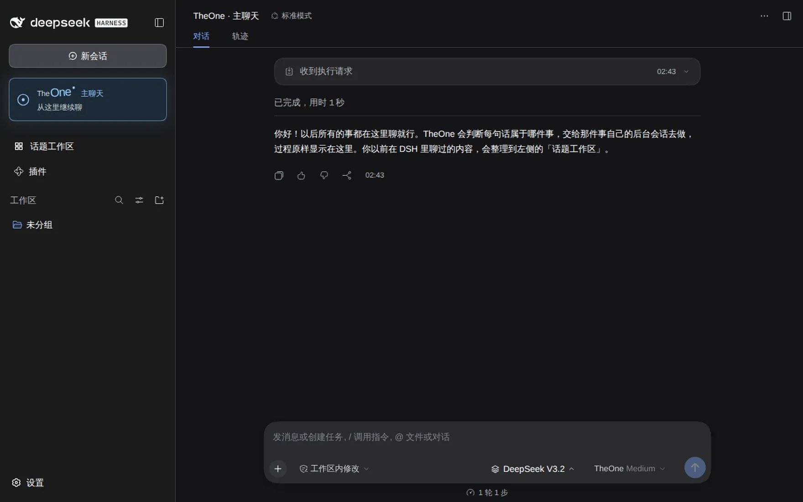

为 DeepSeek Harness 而生的开源插件
直接说你想到的事。TheOne 将消息接续到对应话题，让工作、生活与灵感，各自保留上下文。
一个主聊天，多个话题上下文。

开始使用
沿用你在 DSH 中配置的模型。不需要再给 TheOne 配一把 API Key。
配置模型服务，打开普通会话，确认能收到回复。
在「包名或地址」中输入下面的名称并安装。
dsh-theone
把手头的事说出来，从这里开始继续。